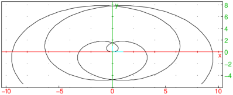
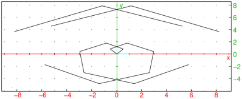
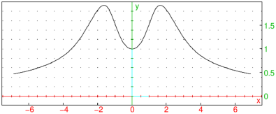

18.2.3 Polygonal paths
The polygonplot
or ligne_polygonale
command draws a polygonal path through given points.
-
polygonplot takes one mandatory argument and one optional argument:
-
Optionally, xcoords, a list of x-coordinates.
By default, the x-coordinates will be a list of integers
starting at 0.
- ycoords, a list of y-coordinates.
You can combine two arguments into a matrix with two columns (each
list becomes a column of the matrix).
- polygonplot(⟨xcoords,⟩ycoords)
draws the polygonal path through the given points, from left to right
(so the points are automatically ordered by increasing x-coordinate).
Examples
| polygonplot([0,1,4,9,16]) |
or:
| polygonplot([0,1,2,3,4],[0,1,4,9,16]) |
or:
| polygonplot([[0,0],[1,1],[2,4],[3,9],[4,16]]) |
or:
| polygonplot([[2,4],[0,0],[3,9],[1,1],[4,16]]) |

The listplot
or plotlist
draws a polygonal path, but in an order determined by you.
-
plotlist takes
L, a list of points or a list of numbers (which will be taken as
y-coordinates, with the x-coordinates being the integers
starting at 0).
- plotlist(L) draws a polygonal path through the
points in the order given by the list.
Unlike polygonplot, the listplot command
cannot be given two lists of numbers as arguments.
Examples
| listplot([[2,4],[0,0],[3,9],[1,1],[4,16]]) |


If you want to get coordinates on the polygonal path, use the
The linear_interpolate
command will find coordinates on the
polygonal path.
-
linear_interpolate takes four arguments:
-
M, a two-row matrix consisting of the x-coordinates and the
y-coordinates.
- xmin, the minimum value of x that you are
interested in.
- xmax, the maximum value of x.
- xstep, the step size that you want.
The values of xmin and xmax must
be between the smallest and largest x-coordinates of the points.
- linear_interpolate(M,xmin,xmax,xstep)
returns a matrix with two rows, the first row will be
[xmin,xmin+xstep,xmin+2xstep,…,xmax]
and the second row will be the corresponding y-coordinates of the
points on the polygonal path.
Example
| linear_interpolate([[1,2,6,9],[3,4,6,12]],2,7,1) |
|
| |
| ⎡
⎢
⎣ | | 2.0 | 3.0 | 4.0 | 5.0 | 6.0 | 7.0 |
| 4.0 | 4.5 | 5.0 | 5.5 | 6.0 | 8.0 |
| ⎤
⎥
⎦ |
|
| | | | | | | | | | |
|